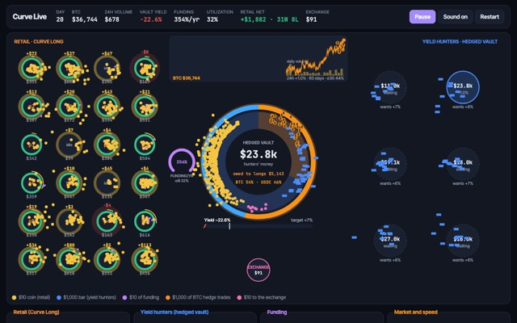
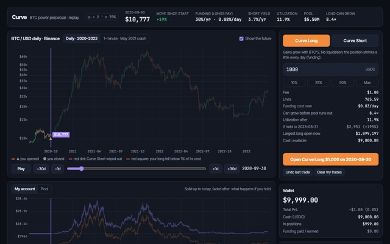
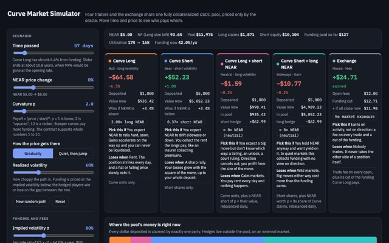
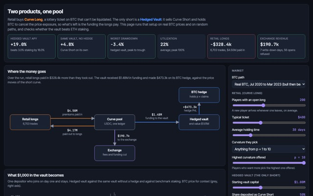
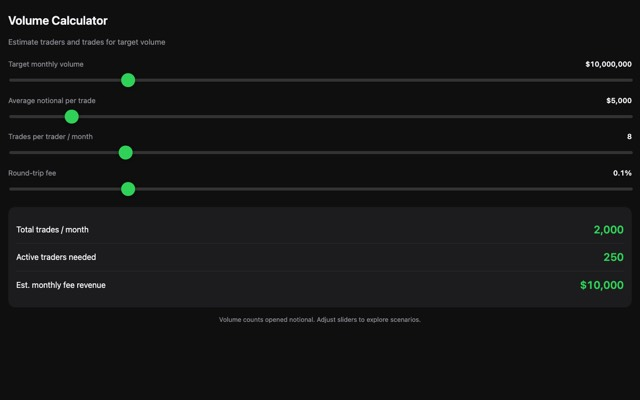

The lab
New here? Start with how Uprise works. Uprise looks simple: pick a strength, buy, watch it grow. Behind that are the models and simulators we built to get the math right. Open any of them and play.
Simulators: how the money moves

Traders buy curves with gold coins, liquidity providers fill the vault, funding drips from traders into the vault. Change any number while it runs.
Play →
Open a Curve Long on any day of Bitcoin 2020–2023 and fast-forward to see what it would have paid, and how the pool holds up.
Play →
Four traders and the exchange share one pool. Move time and price and watch exactly where every dollar goes.
Play →
The two products in one pool, and the conditions under which the yield vault makes money: fees above the volatility that really happens.
Play →
How many traders and trades a month it takes to reach a trading volume, and what the fees would bring in.
Play →